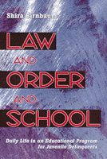

<body bgcolor="#FFFFFF" text="#000000" link="#0000FF" vlink="#CC0000" alink="#CC0000"><center><hr width="350" size="1" align="center" noshade>A powerful look at the state of a juvenile justice agency and its effect on the students it serves<hr width="350" size="1" align="center" noshade><p><a href="https://cdcshoppingcart.uchicago.edu/Cart/ChicagoBook.aspx?ISBN=9781566398695&&PRESS=temple" target="_top">Buy this book!</a> | <a href="https://cdcshoppingcart.uchicago.edu/Cart/Cart.aspx?PRESS=temple" target="_top">View Cart</a> | <a href="https://cdcshoppingcart.uchicago.edu/Cart/Cart.aspx?PRESS=temple" target="_top">Check Out</a></p><p></p></center><!--none//--><h1>Law and Order and School</h1>
<H2>Daily Life in an Educational Program for Juvenile Delinquents</H2>
<h3>Shira Birnbaum</h3>
<P>cloth 1-56639-869-X $59.50, May 01, <FONT COLOR=#990033>Out of Stock Unavailable</FONT>
<br>paper 1-56639-870-3 $26.95, May 01, <FONT COLOR=#990033>Available</FONT>
<BR> 208 pp
5.5x8.25
</P><BLOCKQUOTE><I>"Shira Birnbaum's brilliant new book, </I>Law and Order and School<I>, offers an insider's look at an educational institution for troubled teenagers. It is a work of careful and thoughtful scholarship, yet its ethnographic approach makes it read like a novel as the students and teachers come alive and you see inside the 'Academy' with them. While the book's strength is its in-depth look at this institution, it provides a recognizably authentic picture of what is being faced throughout our nation, and how, in the best of our programs, with idealistic and mostly very competent teachers, we too often still fail our troubled youth. This should be required reading for anyone studying or working with the juvenile justice system and for all of us concerned with the problem."</I>
<br>&#151<b>Steven J. Klees</b>, University of Maryland<I></I></BLOCKQUOTE>
<ul><li><p><I>"It was hard in the beginning; I didn't think I was going to like it."</I><br>&#150student
<li><p><I>"This ain't even a real school, man. This is for discipline."</I><br>&#150student
<li><p><I>"I want to go to college and become a paramedic."</I><br>&#150student
<li><p><I>"Know what you learn in this program? You learn to suck up."</I><br>&#150student
<li><p><I>"The school district would not like what I'm doing here, but I think these kids need it."</I><br>&#150history teacher
<li><p><I>"This is my real ministry."</I><br>&#150community liaison</ul>
<p>These are only some of the voices in <I>Law and Order and School</I>, Shira Birnbaum's riveting study of an education and rehabilitation program for troubled teenagers in a Southern city. Locally acclaimed as one of the better programs of its kind in the region, "Academy" exemplifies a new kind of institution, providing transitional school services under contract with both educational and juvenile justice agencies.
<p>Birnbaum's narrative focuses on curriculum, teaching, behavior management, and the social organization and culture of the program, offering a close-up view of the everyday classroom interactions that frame student achievement and, ultimately, program outcomes. What do students learn? What do teachers teach? What educational and rehabilitative goals are embedded in official and unofficial policy? What processes inside and outside the building help or hinder the attainment of those goals?
<p>As educational and justice agencies look increasingly to private subcontractors to deliver an array of services and growing numbers of young people are channeled into non-traditional educational settings and correctional institutions, it is imperative that educators and the general public understand how these institutions work and what problems their students and staffs encounter. This on-the-ground examination of education within the juvenile justice system will open your eyes to how we educate some of our neediest children.
<BR>&nbsp;<h2>Excerpt</h2><P>Excerpt available at <a href="http://www.temple.edu/tempress">www.temple.edu/tempress</a></p>
<BR>&nbsp;<h2>Reviews</h2>
<p><I>"</I>Law and Order and School<I> is well written and informs readers about an institution that most of us know nothing about. It is extremely rich in detail and includes many scenes and conversations that bring the 'Academy' to life. The stories of the students and teachers are presented respectfully. With the accelerating privatization of both the educational and penal systems, this book is especially important at this time."</I>
<br>&#151<b>Doreen J. Mattingly</b>, Associate Professor of Women's Studies and Geography, San Diego State University
<p><I>"</I>Law and Order and School<I> is a gripping and compelling story. In this ethnographic study of the 'Academy,' Birnbaum lets the story tell itself, without hand-wringing or sermonizing, without stating the obvious, and without upstaging the material. This is in every respect a model of what good writing should be: carefully conceived, theoretically informed and rich in insight, yet unburdened by pretense or jargon. The result is both a beautifully rendered, and a heart-rending, story told in page-turning style."</I>
<br>&#151<b>Robert Lake</b>, Center for Urban Policy Research, Rutgers University
<p><i>"Birnbaum's book offers a rare glimpse of a neglected but important institution, and raises interesting questions about the similarities and differences between schools and prisons, our largest institutions of compulsory attendance."</i>
<br>&#151<b><i>Anthropology and Education Quarterly</I></b>
<p><i>"There have been many first person stories written about the education system in the US. There have been very few books, which tell the story of working and learning in a juvenile treatment facility. The author provides us with a rare 'inside view' of an educator working in a juvenile justice center. ...if you work in or care about the education of youth in residential and treatment centers then by all means read Law and Order and School. This book and the discussions that could surround the education program at the Academy could just be the best professional development program you will have all year."</i>
<br>&#151<b>TCRecord</b>
<p><i>"Birnbaum provides readers with a rich, qualitative case study of what everyday life is like in a private alternative educational program for delinquent youth...her book offers not just a review of one anonymous at-risk educational program; it provides insights about the real people, students and staff alike, their thoughts, feelings, rituals, and the ways in which they cope with life's daily frustrations.... Instructors interested in exposing students to a rich ethnography on issues like these are encouraged to read </i>Law and Order and School<i>."</i>
<br>&#151<b><i>Criminal Justice Review</i></b>
<BR>&nbsp;<h2>Contents</h2><P>
<p>1. Introduction
<br>2. Students and Teachers
<br>3. The Market System of Merit
<br>4. Curriculum Units of Exchange
<br>5. Student Reaction to the Market System
<br>6. Teachers and the Market System
<br>7. Measurement
<br>8. Conclusions
<br>Notes
<br>References
<br>Index
</P><BR>&nbsp;<H2>About the Author(s)</H2>
<P><b>Shira Birnbaum</b> is an educational consultant working in New York and New Jersey.</P>
<BR><H2>Subject Categories</H2>
<p><A HREF="/tempress/education.html" TARGET="_top">Education</a>
<BR><A HREF="/tempress/law.html" TARGET="_top">Law and Criminology</a>
<BR><A HREF="/tempress/sociology.html" TARGET="_top">Sociology</a>
</p>
<p align="center"><a href="https://cdcshoppingcart.uchicago.edu/Cart/ChicagoBook.aspx?ISBN=9781566398695&&PRESS=temple" target="_top">Buy this book!</a> | <a href="https://cdcshoppingcart.uchicago.edu/Cart/Cart.aspx?PRESS=temple" target="_top">View Cart</a> | <a href="https://cdcshoppingcart.uchicago.edu/Cart/Cart.aspx?PRESS=temple" target="_top">Check Out</a></p><p><font face="Arial" size="1"><a href="copyright.html" onMouseOver="window.status='Web Copyright Policy';return true;" onMouseOut="window.status=''" title="Web Copyright Policy">&copy;</a> 2015 <a href="http://www.temple.edu" target="new" onMouseOver="window.status='Link to Temple University home page';return true;" onMouseOut="window.status=''" title="Link to Temple University home page">Temple University</a>. All Rights Reserved. http://www.temple.edu/tempress/titles/1541_reg.html</font></p>